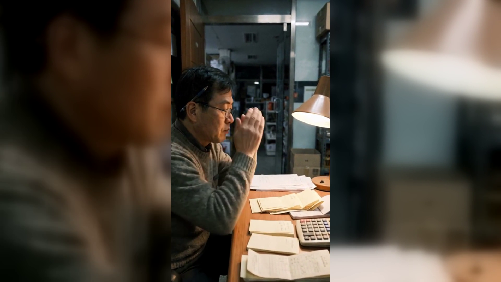

기름값이 내려도 매장 고정비는 그대로인 이유
기름값은 몇 주째 내렸는데 통장에서 나가는 돈은 그대로입니다.
매장 고정비는 유가와 따로 움직이기 때문입니다.
임대료·인건비 다음에 무엇이 오는지 아시는 사장님이 의외로 적습니다.
한 달에 나가는 것을 금액 큰 순서로 적어 보면 손댈 자리가 보입니다.
몇 해 전에 넣고 잊은 항목이 그대로 나가는 경우가 많습니다.
지금 쓰지 않는 것이 있는지 통장 내역을 한 번만 훑어보십시오.
단말기 사용료, 부가 서비스, 별도 계약이 따로 나가고 있으면
합쳐서 얼마인지부터 확인하는 편이 빠릅니다.
고정비를 깎는 데는 한계가 있습니다.
네이버단말기처럼 결제 다음에 리뷰·쿠폰이 남는 쪽이면
같은 비용으로 돌아오는 것이 달라집니다.
고정비 점검은 깎는 일이 아니라 순서를 아는 일입니다.
비싼 순서로 적어 보는 것부터 시작하십시오.
한 가지 더 말씀드리면, 고정비를 볼 때 금액만 보고 결정하면
나중에 더 큰 비용으로 돌아오는 경우가 있습니다.
싼 쪽으로 바꿨는데 고장 났을 때 연락이 닿지 않으면
그날 영업이 멈추고, 그 손해가 아낀 돈보다 큽니다.
그래서 고정비 점검은 금액표를 보는 일이 아니라
그 돈으로 무엇을 받고 있는지 확인하는 일에 가깝습니다.
네이버단말기(Npay 커넥트)는 결제가 끝난 자리에서 네이버 리뷰·쿠폰·적립이 이어지는
스마트 사인패드입니다. 쓰던 포스는 그대로 두고 연결만 합니다.
· 상담 문의 · 긴급 A/S — 평일 9시~20시 / 토·일·공휴일 11시~17시
· 정품 신제품 보증 · 수도권 직영 설치
누리네트웍스 · 결제는 더 쉽게, 매장은 더 스마트하게
🔗 https://nwpos.co.kr?utm_source=youtube&utm_medium=social&utm_campaign=daily7&utm_content=fixedcost
#네이버단말기 #네이버커넥트 #Npay커넥트 #네이버리뷰 #매장리뷰 #단골관리 #쿠폰적립 #매장운영 #매장관리 #고정비절감 #자영업 #소상공인 #자영업노하우 #개인사업자 #가맹점 #창업준비 #상권분석 #피크타임 #결제단말기 #카드단말기 #포스기 #포스 #간편결제 #카드결제 #사인패드 #누리포스 #누리네트웍스 #Shorts
[SNS아이콘]
[SNS배너]